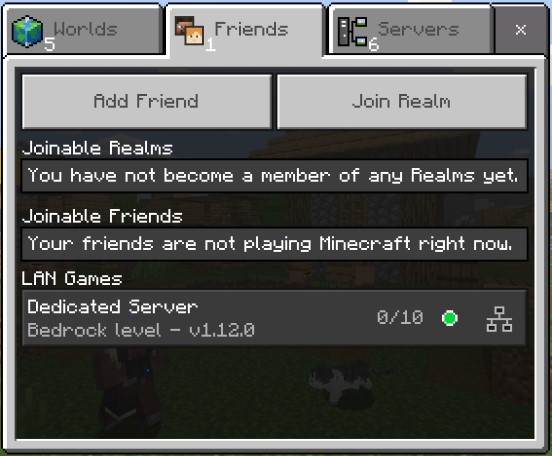

Index


The following starts a Bedrock Dedicated Server running a default version and exposing the default UDP port:
docker run -d -it -e EULA=TRUE -p 19132:19132/udp -v mc-bedrock-data:/data itzg/minecraft-bedrock-server
Note
if you plan on running a server for a longer amount of time it is highly recommended using a management layer such as Docker Compose or Kubernetes to allow for incremental reconfiguration and image upgrades.
Upgrading to the latest Bedrock server version¶
With the VERSION variable set to LATEST, which is the default, then the Bedrock server can be upgraded by restarting the container. At every startup, the container checks for the latest version and upgrades, if needed.
The latest preview version can be requested by setting VERSION to PREVIEW.
Exposed Ports¶
- UDP 19132 : the Bedrock server port. NOTE that you must append
/udpwhen exposing the port, such as-p 19132:19132/udp
Volumes¶
/data: the location where the downloaded server is expanded and ran. Also contains the configuration properties fileserver.properties
You can create a named volume and use it as:
docker volume create mc-volume
docker run -d -it --name mc-server -e EULA=TRUE -p 19132:19132/udp -v mc-volume:/data itzg/minecraft-bedrock-server
If you're using a named volume and want the bedrock process to run as a non-root user then you will need to pre-create the volume and chown it to the desired user.
For example, if you want the bedrock server to run with user ID 1000 and group ID 1000, then create and chown the volume named "bedrock" using:
If usingdocker run then simply reference that volume "bedrock" in the -v argument. If using a compose file, declare the volume as an external using this type of declaration:
Connecting¶
When running the container on your LAN, you can find and connect to the dedicated server in the "LAN Games" part of the "Friends" tab, such as:

Permissions¶
The Bedrock Dedicated Server requires permissions be defined with XUIDs. There are various tools to look these up online and they are also printed to the log when a player joins. There are 3 levels of permissions and 3 options to configure each group
OPSis used to define operators on the server.
MEMBERSis used to define the members on the server.
VISITORSis used to define visitors on the server.
Whitelist¶
There are two ways to handle a whitelist. The first is to set the WHITE_LIST environment variable to true and map in a whitelist.json that is custom-crafted to the container. The other is to use the WHITE_LIST_USERS environment variable to list users that should be whitelisted. This list is player names. The server will look up the names and add in the XUID to match the player.
Note
Starting with 1.16.230.50, ALLOW_LIST, ALLOW_LIST_USERS, and the file allowlist.json will be used instead.
Community Solutions¶
- kaiede/minecraft-bedrock-backup image by @Kaiede
- ghcr.io/edward3h/mc-webhook by @edward3h
- Minecraft Bedrock Server Bridge by @macchie
Tutorials¶
@TheTinkerDad provides an excellent tutorial on how to host multiple instances on a single port (19132) so that it's discoverable: https://www.youtube.com/watch?v=ds0_ESzjbfs